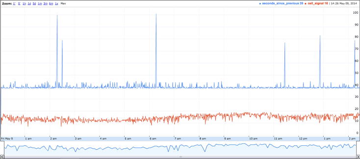
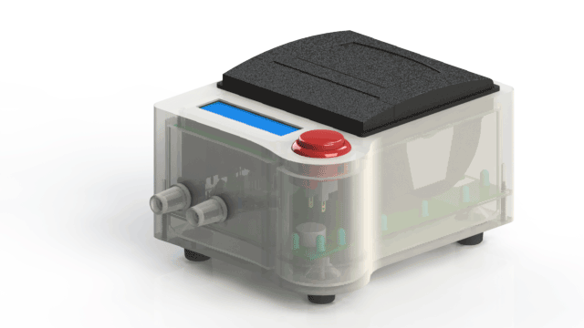
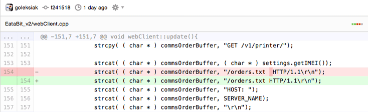

Peaks and troughs in the Silicon Harbor.
We have been running eatabit.com here in Charleston, SC for about a year now. Over that time, our cellular printing api has printed over 9300 food orders for our client restaurants, stadiums and golf courses. Working with cellular has its difficulties - especially in areas with high traffic volume like stadiums during events but we have systems which watch out for conditions like poor signal quality and outages.
Paisano's Pizza: James Island 
Wednesday nights are usually our second-slowest night (Tuesday being the slowest) so when the monitors started spewing out an avalanche of alerts right around midnight, we thought it was a fluke. Unfortunately it wasn't....
Well, outages happen. Sometimes a restaurant has new staff and they unplug the printer to "turn it off" at night but this was ALL the printers. Our SIM provider, T-Mobile, can sometimes reboot a tower and we see a cluster of printers with an outage that lasts 60-90 seconds but this was ALL the printers in Charleston.
Ok, let's start the troubleshooting process by looking at the logging on the cellular printers themselves...

The printers are based on an Arduino Mega (ATMega 1280) chipset so we fired up the Arduino IDE and watched the serial monitor:
SYSTEM::State: Polling.
SYSTEM::Polling: SYSTEM::State: Idle.
WEB::Starting Poll!
WEB::Poll Request:
GET /v1/printer/***************/orders.txt HTTP/1.1
HOST: api.eatabit.io
Authorization: Basic ***********************************************
User-Agent: Eatabit_Device/0.5.1
Content-Length: 67
Content-Type: application/x-www-form-urlencoded
Accept: */*
Connection: close
pickup_minutes=15&delivery_minutes=30&paper_status=1&cell_signal=15
WEB::Request Length: 351
WEB::Request Page Status: 0
AT+CSQ
+CSQ: 20,0
OK
GSM::CSQ:20
AT#SKTD=0,80,"api.eatabit.io",0,0
CONNECT
GSM::SEND: Socket Enabled
GSM::RCXV: Header Sent
HTTP/1.1 505 HTTP Version Not Supported
Connection: close
Server: Cowboy
Date: Wec, 21 Oct 2014 19:22:32 GMT
Content-Length: 0
Wait...what?
HTTP/1.1 505 HTTP Version Not Supported
We have been running this same Arduino firmware version for 9 months without any issues and now this? All of a sudden? At midnight? City-wide? Smells funny... And what is this?
Server: Cowboy
Our app runs on Heroku and we use the Unicorn web server. So what is this "Cowboy" who is speaking for our service?
Ok, let's break out cURL and replicate the request from the command line of my Mac:
curl "http://api.eatabit.io/v1/printer/***************/orders.text?pickup_minutes=30&delivery_minutes=90&state=ok" \
> -X GET \
> -u ***************:****************** \
> -v \
> --user-agent "Eatabit_Device/0.5.1"
* Hostname was NOT found in DNS cache
* Trying 54.225.219.28...
* Connected to api.eatabit.io (54.225.219.28) port 80 (#0)
* Server auth using Basic with user '***************'
> GET /v1/printer/***************/orders.text?pickup_minutes=30&delivery_minutes=90&state=ok HTTP/1.1
> Authorization: Basic ***********************************************<
> User-Agent: Eatabit_Device/0.5.1
> Host: api.eatabit.io
> Accept: */*
>
< HTTP/1.1 200 OK
* Server Cowboy is not blacklisted
< Server: Cowboy
< Connection: keep-alive
< Date: Mon, 21 Oct 2014 01:25:11 GMT
< Status: 200 OK
< Content-Type: text/plain
< Content-Length: 7
< Etag: "26f14889eed7cc4b3b78cc667c7ee9eb"
< Cache-Control: max-age=0, private, must-revalidate
< X-Request-Id: dce1a529-fff1-4222-b997-21d7c074487f
< X-Runtime: 1.135825
< Via: 1.1 vegur
<
* Connection #0 to host api.eatabit.io left intact
{0:0}{}%
Ok, that passes...so, WTF?! I guess we'll have to look into the Arduino firmware where the REST request is created.
if(isCommsBufferAvailable()) {
//make the chunk
uint8_t dataLength = snprintf(( char * )tempString, sizeof(tempString),
"pickup_minutes=%hhu&delivery_minutes=%hhu&paper_status=%hhu&cell_signal=%hhu",
settings.getPickupMinutes(),
settings.getDeliveryMinutes(),
printer.hasPaper(),
gsmModem.getSignal()
);
uint8_t contentLength[4];
dataLength = strlen( ( char * ) tempString);
itoa(dataLength,( char * ) contentLength, 10);
IF_DEBUG(DEBUG_INFO) PORT_DEBUG.println("WEB::Starting Poll!");
reserveCommsBuffer();
//build the header for the POLL request
strcpy( ( char * ) commsOrderBuffer, "GET /v1/printer/");
strcat( ( char * ) commsOrderBuffer, ( char * ) settings.getIMEI());
strcat( ( char * ) commsOrderBuffer, "/orders.txt HTTP/1.1\r\n");
strcat( ( char * ) commsOrderBuffer, "HOST: ");
strcat( ( char * ) commsOrderBuffer, SERVER_NAME);
strcat( ( char * ) commsOrderBuffer, "\r\n");
strcat( ( char * ) commsOrderBuffer, "Authorization: Basic ");
strcat( ( char * ) commsOrderBuffer, ( char * ) settings.getAccess());
strcat( ( char * ) commsOrderBuffer, "\r\n");
strcat( ( char * ) commsOrderBuffer, "User-Agent: Eatabit_Device/");
strcat( ( char * ) commsOrderBuffer, SOFTWARE_VER);
strcat( ( char * ) commsOrderBuffer, "\r\n");
strcat( ( char * ) commsOrderBuffer, "Content-Length: ");
strcat( ( char * ) commsOrderBuffer, ( char * ) contentLength);
strcat( ( char * ) commsOrderBuffer, "\r\n");
strcat( ( char * ) commsOrderBuffer, "Content-Type: application/x-www-form-urlencoded\r\n");
strcat( ( char * ) commsOrderBuffer, "Accept: */*\r\n");
strcat( ( char * ) commsOrderBuffer, "Connection: close\r\n");
strcat( ( char * ) commsOrderBuffer, "\r\n");
strcat( ( char * ) commsOrderBuffer, ( char * ) tempString);
IF_DEBUG(DEBUG_BUFFERS) {
temp1 = strlen((char*) commsOrderBuffer);
PORT_DEBUG.println("WEB::Poll Request: ");
PORT_DEBUG.println((char*)commsOrderBuffer);
PORT_DEBUG.print("WEB::Request Length: ");
PORT_DEBUG.println(temp1);
}
temp1 = gsmModem.requestPage( (uint8_t *) SERVER_NAME, PORT_NUMBER, commsOrderBuffer, commsOrderBuffer, ORDER_QUE_MAX_ORDER_SIZE);
IF_DEBUG(DEBUG_BUFFERS) {
PORT_DEBUG.print("WEB::Request Page Status: ");
PORT_DEBUG.println(temp1);
}
//go wait for the response
_state = WEB_WAIT_POLL;
}
else {
IF_DEBUG(DEBUG_BUFFERS) PORT_DEBUG.println("WEB::Buffer In use!");
}
break;
Wait. Is that...an extra whitespace char between the URL and HTTP version in the line:
strcat( ( char * ) commsOrderBuffer, "/orders.txt HTTP/1.1\r\n");
So let's test the theory that Cowboy can't handle more than one character of whitespace between parsable params by adding one whitespace character to the end of the URL.
curl "http://api.eatabit.io/v1/printer/***************/orders.text?pickup_minutes=30&delivery_minutes=90&state=ok " \
-X GET \
-u ***************:****************** \
-v \
--user-agent "Eatabit_Device/0.5.1"
* Hostname was NOT found in DNS cache
* Trying 54.225.123.174...
* Connected to api.eatabit.io (54.225.123.174) port 80 (#0)
* Server auth using Basic with user '***************'
> GET /v1/printer/***************/orders.text?pickup_minutes=30&delivery_minutes=90&state=ok HTTP/1.1
> Authorization: Basic ***********************************************<<
> User-Agent: Eatabit_Device/0.5.1
> Host: api.eatabit.io
> Accept: */*
>
< HTTP/1.1 505 HTTP Version Not Supported
< Connection: close
* Server Cowboy is not blacklisted
< Server: Cowboy
< Date: Mon, 27 Oct 2014 02:03:25 GMT
< Content-Length: 0
<
* Closing connection 0
Twist!

Ok, so we have a bug in our code (in the form of the extra whitespace charater). So why did this start all of a sudden? That bug would have existed for at least 9 months on the firmware in the field...
So what changed?
Server: Cowboy
Cowboy. Who is runnig the Cowboy server that is silently blocking our (admittedly malformed) requests? Heroku? AWS? Cursory Google searches do not allude to either party's use of Cowboy. We have requests submitted to both parties and are waiting to hear back... Stay tuned.